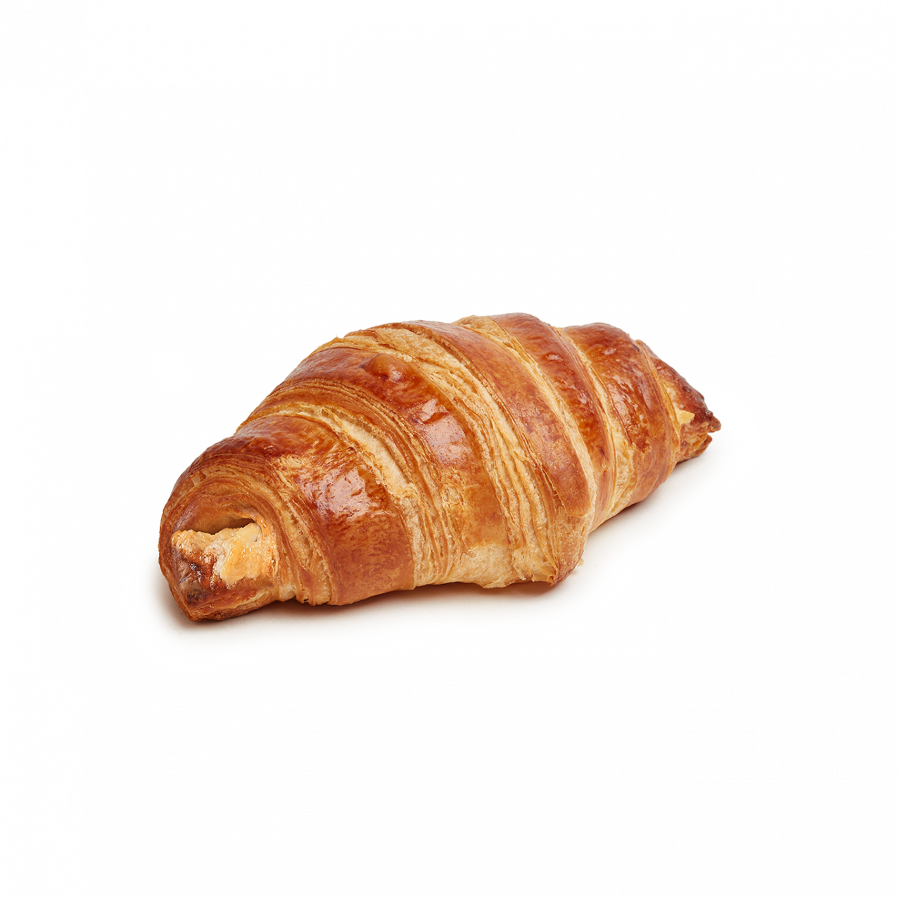
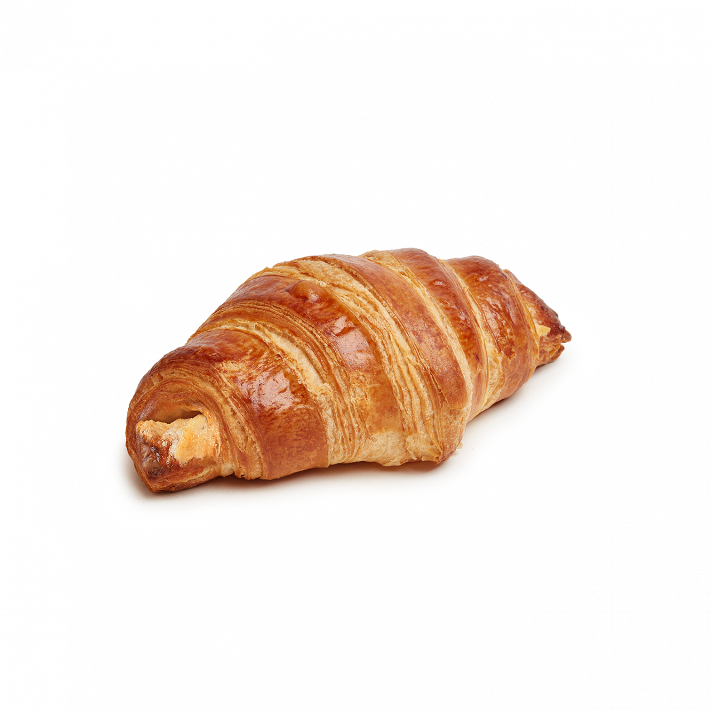

Croissants
The croissant's origins are debated, but it's widely believed to have originated in Austria. The croissant is a descendant of the kipferl, a crescent-shaped pastry that's been around since the 13th century.
The croissant's origins are debated, but it's widely believed to have originated in Austria. The croissant is a descendant of the kipferl, a crescent-shaped pastry that's been around since the 13th century.
